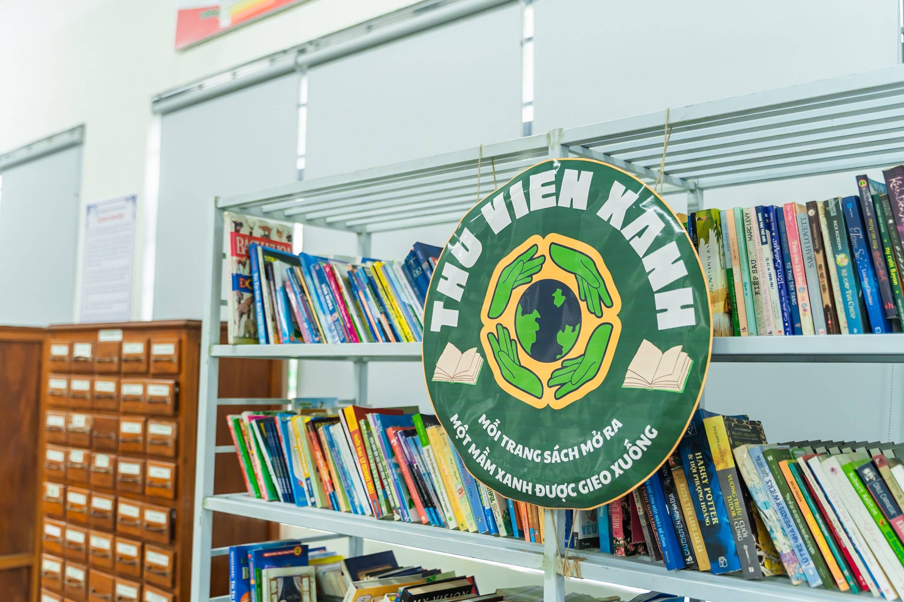
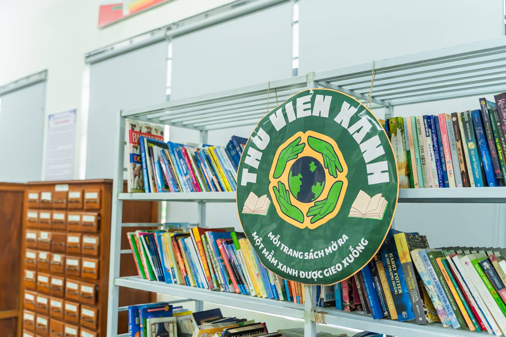

Không gian thư viện được cải tạo, từng bước hình thành môi trường đọc “xanh”
Thư viện nhà trường được cải tạo theo hướng xanh - thoáng - yên tĩnh với việc sắp xếp lại kệ sách, bổ sung cây xanh và ánh sáng tự nhiên. Sau khi thay đổi, số lượng học sinh đến thư viện tăng rõ rệt, đặc biệt vào giờ ra chơi và sau giờ học, cho thấy không gian đọc mới đã tạo được sự hứng thú và thói quen đọc sách thường xuyên hơn.

 
